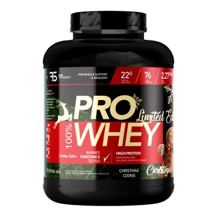

Suplementi su dodaci ishrani uz pomoć kojih se organizmu pruža potrebna količina proteina, amino kiselina, nutrienata, vitamina i minerala koja se ne može obezbediti ishranom. Najveći broj ljudi poseže za suplementima kada se ne oseća dobro i kada želi da poboljša zdravlje.
Sportska suplementacija:
Whey protein je protein koji potiče od nusprodukta mleka-surutke, a ujedno je i jedan od najboljih izvora proteina kada se radi o vrhunskom kvalitetu. Protein surutke je izuzetno hranljiv pa na taj način nudi odličnu podršku fizički aktivnim osobama i sportistima koji redovno treniraju, jer može ponuditi mnoge prednosti kada se radi o vežbanju.

22g Proteina po porciji
Povećanje mišićne mase
5g BCAA po porciji
Poboljšava oporavak
Uzimanje suplemenata kreatina može doneti niz prednosti za sportiste i rekreativce koji žele da poboljšaju svoje performanse i postignu bolje rezultate. Korišćenje suplemenata kreatina može povećati nivoe kreatina u mišićima, što može rezultirati poboljšanom sposobnošću za obavljanje kratkotrajnih, visoko intenzivnih aktivnosti. Ovo može značiti veću snagu, izdržljivost i brži oporavak između serija ili treninga.
Povećanje mišićne mase
Povećanje snage
Poboljšanje izdržljivosti
Brži oporavak
Poboljšanje sportske performase
Poboljšanje kognitivnih funkcija
Multivitamini pružaju širok spektar vitamina i minerala koji podržavaju opšte zdravlje i imunitet. Ovi suplementi mogu biti korisni za sportiste koji imaju povećane potrebe za hranljivim materijama zbog intenzivne fizičke aktivnosti
Kombinacija 21 vitamina i minerala
Svakodnevno unapređenje zdravlja
Pomaže u ublažavanju umora i zamora
Podržava metabolizam proteina
Bez soje
Ashwagandha je biljni dodatak koji se koristi u tradicionalnoj indijskoj medicini, poznat po svojim adaptogenim svojstvima koja pomažu organizmu da se nosi sa stresom i umorom. Često se koristi za smanjenje anksioznosti, poboljšanje koncentracije i podršku zdravlju srca. Preporučuje se za svakodnevnu upotrebu, uz savjet stručnjaka, kako bi se postigla optimalna ravnoteža i vitalnost.